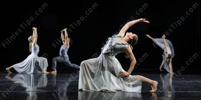

DANÇA MODERNA
esquerda
O QUE É DANÇA MODERNA?
A dança moderna é um gênero de dança que foca na expressão e no movimento livre do corpo.
Possui gestos fluidos que expressam o sentimento do dançarino. O estilo da dança moderna
é mais descontraído e não se limita
a técnicas e figurinos pré-determinados.
Os bailarinos dançam descalço,trabalham com
contrçoes,torçoes,desencaixes,em mivimentos mais livres,embora ainda respeitem
uma técnica organizada.
A dança moderna surgiu entre os séculos XIX e XX, principalmente na América do Norte e na
Europa, como um protesto ao balé clássico, que possuía movimentos rígidos seguidos
rigorosamente pelos bailarinos. Esse protesto foi tão intenso, que
um dos primeiros elementos a serem retirados foram as sapatilhas do balé.

direita
Nathalia Gomes e Daniele